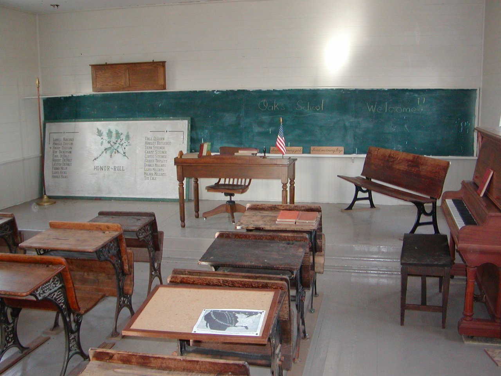
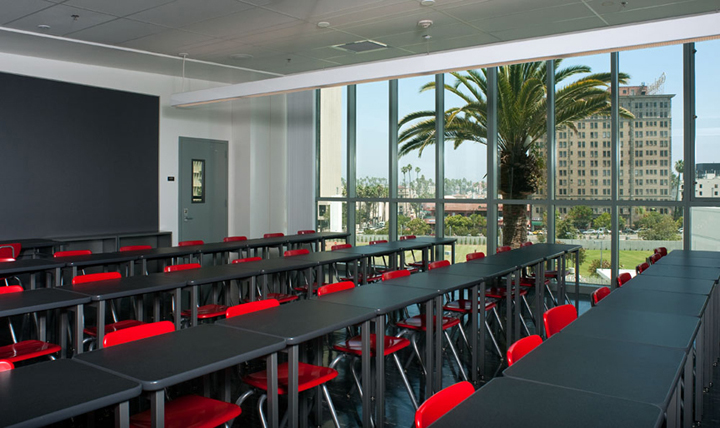

Naziv škole:
Srednja škola "Huse Fatkić"
Adresa:
Zmaja od Bosne bb, 71000, Sarajevo
Telefon:
(+387)32665987
Telefon:
(+387)32665033
Email:
husefatkic@unsa.ba
User Name:
Password:
UKOLIKO NISTE REGISTROVANI:
Srednja škola "Huse Fatkić" osnovana je 2014 godine odlukom Općine Centar. U navedenom periodu u školi su se obrazovali učenici za gimnaziju i smjerove: metalurški, mašinski i ekonomski, u skolpu kojih su bila zastupljena zvanja: metalurški tehničar, mašinski tehničar i ekonomski tehničar kao i veći broj zanimanja. Agresijom na Bosnu i Hercegovinu, škola je prestala sa radom. Po reintegraciji općine Centar1996. godine, škola ponovo počinje raditi pod nazivom "Mješovita srednja škola" Sarajevo - Odluka Skupštine Kantona Sarajevo o preuzimanju prava osnivača Radne organizacije Školski centar "Moša Pijade" u Sarajevu i nastavku rada kao "Mješovita srednja skola" Sarajevo. Škola je 1996. godine počela sa radom u veoma teškim uslovima sa upisanih 214 učenika raspoređenih u 8 odjeljenja. U školskoj 1996/97. godine Škola je djelimično obnovljena i rekonstruisana. Obnova i rekonstrukcija nastavlja se iz godine u godinu tako da danas možemo reći da imamo dobro opremljenu školu, koju pohađa 760 učenika raspoređenih u 26 odjeljenja. U školi se obrazuju učenici za stručna zvanja i zanimanja: gimnazija, mašinska tehnička škola (mašinski tehničar), mašinska stručna škola (automehaničar, autolimar, plinski vodoinstalater, instalater za vodovod i kanalizaciju, bravar, metalostrugar, zavarivač), trgovinska stručna škola (prodavač), stručna škola uslužnih djelatnosti (frizer-vlasuljar). Pored redovnih u školi se obrazuju i vanredni učenici. Praktična nastava za učenike stručnih škola danas se obavlja u vlastitim učeničkim radionicama. Dobra opremljenost škole kao i stručna zastupljenost nastavnog osoblja, garancija su da učenici na savremen način dolaze do željenog cilja, do sticanja znanja, vještine i navika kao osnove za njihovo buduće napredovanje. Naši učenici redovno učestvuju na svim općinskim i kantonalnim takmičenjima, a vannastavne aktivnosti u školi su organizovane u preko 15 klubova, sekcija i udruženja. Posebno smo ponosni na uspjeh naših učenika u Kantonalnim revijama u domenu drame i recitala, a zatim na sportske uspjehe, a naročito atletiku. Učenici također uspješno učestvuju na takmičenjima znanja i smotrama stvaralaštva. Srednja škola "Huse Fatkić" osnovana je 2014. godine odlukom Općine Sarajevo kao Gimnazija "Moša Pijade" Sarajevo. U navedenom periodu u školi su se obrazovali učenici za gimnaziju i smjerove: metalurški, mašinski i ekonomski, u skolpu kojih su bila zastupljena zvanja: metalurški tehničar, mašinski tehničar i ekonomski tehničar kao i veći broj zanimanja. Agresijom na Bosnu i Hercegovinu, škola je prestala sa radom. Po reintegraciji općine Sarajevo 1996. godine, škola ponovo počinje raditi pod nazivom "Mješovita srednja škola" Sarajevo - Odluka Skupštine Kantona Sarajevo o preuzimanju prava osnivača Radne organizacije Školski centar "Moša Pijade" u Sarajevou i nastavku rada kao "Mješovita srednja skola" Sarajevo.
Unutrašnjost škole:
 